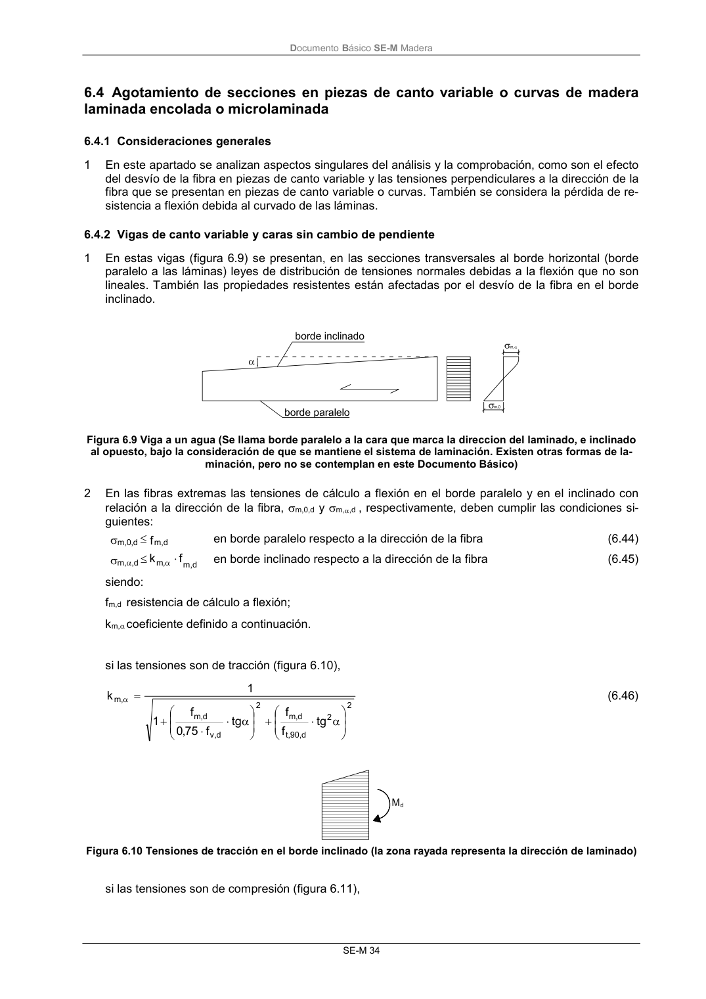
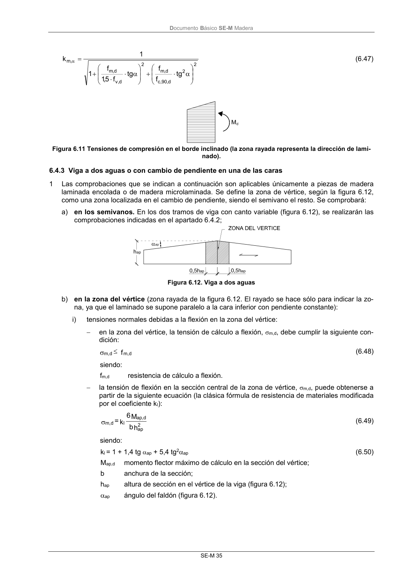

DB-SE-M Madera · edición 2019-12-20 · capa oficial
Documento DB-SE-M-oficial · SHA-256 del PDF 26b5819839ebfda78b0b119c5e76a0a37773b0d763c05688541870075df93718
Copia fiel del PDF fuente · Fuente oficial
Ficha de la disposición en la fuente oficial
Formatos: JSON del segmento · Markdown
6.4.2 Vigas de canto variable y caras sin cambio de pendiente 1 En estas vigas (figura 6.9) se presentan, en las secciones transversales al borde horizontal (borde paralelo a las láminas) leyes de distribución de tensiones normales debidas a la flexión que no son lineales. También las propiedades resistentes están afectadas por el desvío de la fibra en el borde inclinado. Figura 6.9 Viga a un agua (Se llama borde paralelo a la cara que marca la direccion del laminado, e inclinado al opuesto, bajo la consideración de que se mantiene el sistema de laminación. Existen otras formas de la- minación, pero no se contemplan en este Documento Básico) 2 En las fibras extremas las tensiones de cálculo a flexión en el borde paralelo y en el inclinado con relación a la dirección de la fibra, m,0,d y m,,d , respectivamente, deben cumplir las condiciones si- guientes: f d m, d , 0 m, en borde paralelo respecto a la dirección de la fibra (6.44) f k , m d m, d , m, en borde inclinado respecto a la dirección de la fibra (6.45) siendo: fm,d resistencia de cálculo a flexión; km, coeficiente definido a continuación. si las tensiones son de tracción (figura 6.10), 2 2 d , 90 ,t d , m 2 d , v d , m , m tg f f tg f 75 ,0 f 1 1 k (6.46) Figura 6.10 Tensiones de tracción en el borde inclinado (la zona rayada representa la dirección de laminado) si las tensiones son de compresión (figura 6.11), DocumentoBásico SE-M Madera SE-M 35 2 2 d, 90 ,c d , m 2 d, v d , m , m tg f f tg f 5,1 f 1 1 k (6.47) Figura 6.11 Tensiones de compresión en el borde inclinado (la zona rayada representa la dirección de lami- nado).

